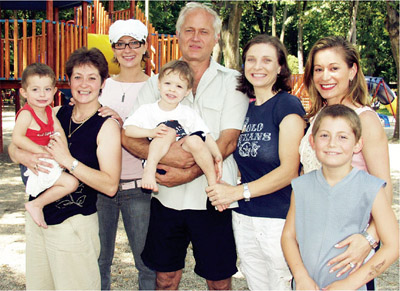

Ecaterina Szabo (ROM)
1984 Olympic V, B and FX Champion
"I was 7
years old when I learned the back somi on beam."

Szabo poses with former
teammates Maria Olaru, Daniela
Silivas and Lavinia Agache, and coach Adrian Goreac.
Medal Total
- Olympic Games: 4 Gold, 1
Silver
- World Championships: 2
Gold, 5 Silver, 2 Bronze
- World Cup: 1 Bronze
- European Championships: 2
Gold, 2 Silver, 1 Bronze
Ecaterina was born on January
22, 1966 in Zagon. Her first language is Hungarian; she learned to speak
Romanian only after she started going to gymnastics lessons. Her first
coaches were Marta and Bela Karolyi. Later in her career, Kati was coached
by Adrian Goreac, Adrian Stan and Maria Cosma at the famous Cetate Deva
school. A fall from uneven bars during team optionals at the 1984 Olympics
prevented her from winning the overall title, but she came back in event finals to win 3
gold medals.
Competition Results
- 1978
ROM Championships (category IV): 6th AA
1980
- Chunichi Cup: 17th AA, 1st B
- Jr. European Championships: 1st AA, 1st V, 1st B, 1st
FX, 4th UB
ROM-GBR Dual Meet: 1st Team, 2nd AA
ROM-SUI Dual Meet: 1st Team, 6th AA
Tokyo Cup: 2nd UB
-
- 1981
- Daciada: 3rd AA
International Championships of Romania: 3rd V
- Intl. Junior Championships (Tokyo): 3rd AA,
1st FX, 2nd V, 2nd UB
Intl. Junior Championships (Sapporo): 1st V
-
- 1982
- Balkan Championships: 1st Team, 2nd AA, 2nd B
- Ennia Gold Cup: 1st AA, 1st FX, 2nd UB, 4th V
- International Championships of Romania: 1st AA, 1st
UB, 1st FX, 2nd B
- Jr. European Championships: 1st AA, 1st V, 1st FX, 2nd
UB, 4th B
-
- 1983
- Catania Cup: 2nd AA
City of Popes Jr. International: 1st AA
- European Championships: 3rd AA, 1st UB, 1st
FX, 2nd V
- ESP-ROM Dual Meet: 1st Team, 2nd AA
FRG-ROM Dual Meet: 1st Team, 1st AA
- GBR-ROM Dual Meet: 1st Team, 2nd AA
- Gymnastics Hit Parade of Rome: 1st B, 1st FX
- HOL-ROM Dual Meet: 1st Team, 1st AA
- International Championships of Romania: 1st AA, 1st
UB, 1st B, 1st FX, 2nd V
- ROM Championships: 2nd AA
- World Championships: 2nd Team, 3rd AA, 1st FX,
2nd V, 2nd UB
-
- 1984
- Balkan Championships: 1st Team, 1st AA, 1st V, 1st UB
- Chunichi Cup: 1st AA, 3rd B, 3rd FX
ESP-ROM Dual Meet: 1st Team, 1st AA
Golden Sands International: 1st AA,1st FX
- International Championships of Romania: 2nd AA, 1st V, 1st B, 1st FX
- Olympic Games: 1st Team, 2nd AA, 1st V, 1st B,
1st FX
- ROM Championships: 1st AA
ROM-TCH Dual Meet: 1st Team, 1st AA
- Tokyo Cup: 1st B, 2nd FX
-
- 1985
- Balkan Championships: 1st Team, 1st AA, 1st UB, 1st B,
1st FX, 2nd V
- DTB Cup: 2nd AA, 1st V, 2nd UB, 3rd FX, 4th B
- ESP-ROM Dual Meet: 1st Team, 1st AA
- European Championships: 5th AA, 2nd V,6th
B, 6th FX
- FRA-ROM-SUI Tri-Meet: 1st Team, 1st AA
- Gander Memorial: 1st AA
- HOL-ROM Dual Meet: 1st Team, 1st AA
- International Championships of Romania: 1st AA
ROM Championships: 1st AA, 1st UB, 1st FX
- ROM-TCH Dual Meet: 1st Team, 1st AA
- SUI-ROM-FRG Meet: 1st Team, 1st AA
Swiss Cup: 2nd AA
- University Games: 2nd Team, 2nd AA, 1st V, 1st B, 2nd
UB, 2nd FX
- World Championships: 2nd Team, 5th
AA, 2nd B, 4th FX, 6th UB
-
- 1986
- Balkan Championships: 1st Team, 1st AA, 1st V, 2nd UB
- DTB Cup: 2nd AA, 2nd FX
- ESP-ROM-BUL Tri-Meet: 1st Team, 3rd AA
Gander Memorial: 1st AA
ROM Championships: 1st AA, 1st V, 1st FX, 2nd UB
- ROM-TCH Dual Meet: 1st Team, 3rd AA
- World Cup: 4th AA, 3rd V, 4th B, 5th
UB
-
- 1987
- Madrid Grand Prix: 1st V, 1st B, 1st FX, 2nd UB
- SUI-ROM Dual Meet: 1st Team, 4th AA
- University Games: 2nd Team, 5th AA, 2nd V, 2nd B
- World Championships: 1st Team, 14th
AA, 3rd B
This page was last updated on April 01, 2021.
© Gymn Forum